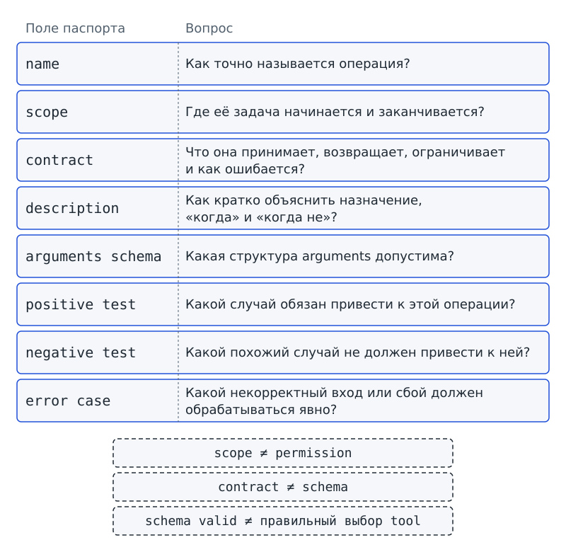
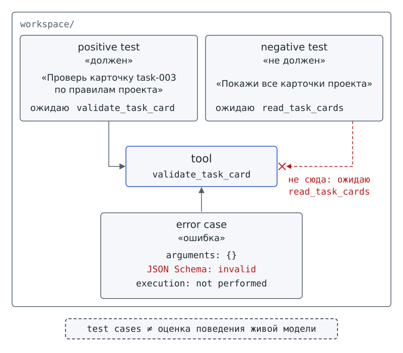

Глава 8. Хороший tool¶
С чего всё началось¶
До Фестиваля науки остаётся несколько дней. Программа-помощник «Дежурный» получает запросы tool call. Dispatcher сверяет имя операции с allowlist и до выполнения проверяет arguments. Результат или tool error возвращается в agent loop. На доске проектного бюро схема выглядит почти законченной, пока Марк не показывает Ане новое описание одной операции.
На карточке написано:
validate_task_card
работает с данными и помогает пользователю
— Коротко и универсально, — говорит Марк. — Модель разберётся.
Аня пишет рядом две просьбы:
Проверь карточку task-003.
Покажи все карточки проекта.
Обе просьбы относятся к карточкам проекта. Но первая требует проверить одну конкретную карточку, а вторая требует получить набор карточек. Помогает ли описание «работает с данными» различить просьбы? Почти не помогает: формулировка подходит и для проверки карточки, и для чтения всей доски.
Марк запускает один удачный пример: validate_task_card получает task_id, приложение проверяет arguments по schema, функция выполняется. Марк уже собирается поставить зелёную галочку напротив tool, но Аня останавливает его.
— Мы доказали, что один вызов сработал. А доказали ли мы, что этот tool не будут выбирать там, где нужен другой? И что будет, если arguments неполные?
Вопрос-Прогноз. Можно ли считать tool хорошо спроектированным после одного успешного вызова? Что ещё нужно проверить, чтобы отделить его задачу от похожих задач и увидеть ошибки до того, как они станут проблемой?
В главе 7 мы проверяли уже выбранное имя и arguments перед выполнением операции через Dispatcher. Теперь нужно вернуться на шаг раньше и спросить: хорошо ли спроектирована сама операция, которую мы разрешили?
Главный вопрос главы. Как сделать tool точным и проверяемым?
Фигура 21. Слишком широкое описание
После главы ты сможешь¶
- объяснять, зачем каждому tool нужна ясная граница задачи;
- составлять contract операции и отличать его от JSON Schema;
- писать description, которое говорит не только «что делает tool», но и когда его применять и когда не применять;
- находить пересечение двух слишком широких descriptions;
- объяснять роль validator и границу его доказательств;
- составлять минимальный набор из positive test, negative test и error case;
- различать проверку формы arguments и проверку того, правильно ли вообще выбран tool;
- собирать паспорт одного tool и проводить взаимное ревью набора tools;
- показывать, почему хороший дизайн уменьшает лишние вызовы, но не заменяет permissions, sandbox и будущую систематическую оценку поведения модели.
Урок 15. Хороший tool начинается с границы¶
1. От разрешённого имени к хорошей операции¶
В прошлой главе мы построили маршрут tool call → Dispatcher → allowlist → schema arguments → выполнение. Приложение проверяет, можно ли связать полученное имя с предусмотренной реализацией и верны ли arguments по форме. Но зачем существует сама операция и где заканчивается её работа? Одной проверки имени и arguments для ответа недостаточно.
Представь, что в allowlist записаны два разрешённых имени: read_task_cards читает все карточки проекта, а validate_task_card проверяет одну карточку по task_id. Dispatcher умеет вызвать обе операции. Если обе операции описаны словами «работает с карточками», система может выбрать неподходящий tool. Dispatcher точно сопоставит выбранное имя с реализацией, но точность маршрутизации не исправит предшествующий выбор.
Начинай проектировать tool с определения задачи, а не с выбора красивого имени или одного удачного запуска. Сначала нужно понять, какую работу операция должна выполнять.
2. Scope: где задача начинается и заканчивается¶
На первый взгляд предложение Марка выглядит удобным: универсальное описание должно подходить ко многим просьбам. Но как тогда отличить проверку карточки от чтения всей доски? Чем шире описание, тем больше соседних задач могут показаться подходящими. Операции нужна ясная граница.
Scope / граница задачи — ясное описание того, где задача tool начинается и заканчивается.
Чтобы задать scope (границу задачи), ответь на вопрос: «Какую отдельную работу выполняет tool и какую похожую работу уже не должен выполнять?» Операция validate_task_card(task_id) получает task_id одной уже известной карточки и проверяет выбранную карточку по правилам проекта. Работа заканчивается, когда операция возвращает результат проверки. Для получения списка всех карточек нужна другая операция.
Сравним scope с назначением окошка школьной мастерской, над которым написано «приём приборов на проверку». Просьба «выдай список всех приборов школы» тоже касается приборов, но не соответствует назначению окошка. Надпись помогает различить работы, как scope помогает различить операции. Однако scope не ставит физическую преграду и не запрещает доступ к данным.
Scope не заменяет permission или sandbox: описание задачи не выдаёт приложению технических прав и не ограничивает операционную систему. Scope нужен, чтобы у операции была одна понятная ответственность, не включающая соседние задачи.
Проверь себя на ходу. Если
validate_task_cardумеет проверять одну карточку, следует ли расширить его так, чтобы он заодно читал все карточки и строил сводку? Что станет с его scope?
3. Contract: что обещает операция¶
Допустим, мы уже договорились, что validate_task_card работает с одной карточкой. Достаточно ли такой границы, чтобы вызвать операцию? Нет: прежде вызывающая программа должна знать, какие данные передать и какого исхода ожидать. Нужно согласовать не только назначение операции, но и входы, выход, ограничения и возможные ошибки.
Contract / контракт операции — согласованное описание назначения, входов, выхода, ограничений и ошибок операции.
По contract (контракту операции) вызывающая часть программы знает, какие данные передать. Разработчик реализации знает, какой результат операция должна вернуть. Команда заранее записывает, чего операция не делает и какие неуспешные исходы должна явно сообщать.
Contract не сводится к одному description или одной JSON Schema. Описание назначения помогает выбрать операцию, а схема задаёт требования к структуре arguments. Contract связывает требования к данным со смыслом работы, ограничениями и ошибками.
Для validate_task_card учебный contract можно записать так:
| Часть | Договор |
|---|---|
| Назначение | проверить одну карточку проекта по её task_id |
| Вход | непустой строковый task_id |
| Результат | структурированный результат проверки карточки |
| Ограничение | не читает произвольный путь, полученный от модели; не строит сводку |
| Ошибки | отсутствующий task_id, неизвестная карточка, некорректные данные карточки |
Проверка по schema может подтвердить, что task_id содержит непустую строку. Но такая проверка не установит, требовался ли для просьбы пользователя validate_task_card или нужно было выбрать read_task_cards.
Допустим, ученик передал непустой task_id, но карточки с таким номером у бюро нет. Строка соответствует требованию к форме, а операция всё равно не сможет проверить несуществующую карточку. Поэтому contract отдельно предусматривает ошибку «неизвестная карточка».
Проверь себя на ходу. Вызов
validate_task_cardполучил{"task_id": "task-003"}и прошёл JSON Schema. Какая часть contract уже проверена, а какая ещё нет?
4. Description: короткая граница для выбора¶
Вернёмся к фразе Марка «работает с данными и помогает пользователю». Что нужно исправить: длину фразы или содержание? Сама краткость не мешает. Мешает отсутствие признаков, по которым можно отличить одну операцию от соседней.
Description («описание») записывают в поле description каталога tools. Механизм выбора получает краткое описание назначения вместе с именем операции и schema arguments. По описанию должно быть понятно, где проходит scope; слишком общая формулировка мешает выбрать операцию.
Полезный шаблон состоит из четырёх вопросов:
Что делает?
Над каким объектом?
Когда применять?
Когда не применять?
Для validate_task_card можно написать: «Проверяет одну существующую карточку задачи по task_id на соответствие правилам проекта. Используй для проверки конкретной карточки. Не используй для чтения всей доски или построения сводки». Описание отвечает на все четыре вопроса: называет действие и объект, указывает подходящие случаи и исключает соседние задачи.
Имя операции тоже помогает понять назначение. В нашем наборе используется форма «глагол + объект»:
read_task_cardsозначает «прочитать карточки задач».validate_task_cardозначает «проверить карточку задачи».build_status_reportозначает «построить сводку статуса».propose_status_updateозначает «предложить обновление статуса».
Имя не заменяет description: оба должны соответствовать одному scope. Если из имени следует одна работа, а из description другая, нужно проверить согласованность contract.
5. Ложный и пропущенный вызов¶
Описание может ошибочно направить запрос к операции или, наоборот, не указать на нужную операцию. Ложный вызов — ситуация, когда tool выбран там, где его применять не следовало. Пропущенный вызов — ситуация, когда tool подходил задаче, но выбран не был.
Слишком широкое description повышает риск ложных вызовов: слова «работает с данными» подходят почти к любой задаче проекта. Слишком узкое или неполное description повышает риск пропущенных вызовов: нужная операция существует, но описание не позволяет узнать подходящую задачу.
Представим, что операция умеет проверять карточки любой группы проекта, а description говорит только о карточках лабораторной группы. Тогда просьба проверить карточку группы, которая готовит афишу, может остаться без нужного вызова. Ограничение появилось в описании, хотя назначение операции такого ограничения не содержит.
Dispatcher получает уже выбранное имя и сверяет allowlist, а не выбирает операцию заново. Если для просьбы «покажи все карточки» выбрали разрешённый validate_task_card, проверка имени пройдёт. Однако разрешение вызвать validate_task_card не делает проверку одной карточки ответом на просьбу показать всю доску.
Различие между разрешением и выбором можно записать так:
разрешённый tool ≠ подходящий tool
6. Центральный артефакт: паспорт хорошего tool¶
Как проверить, согласованы ли назначение операции и требования к вызову? Запишем описание и правила в одном паспорте, чтобы сопоставить части. Паспорт пригодится и для промежуточной проверочной работы.
| Поле паспорта | Вопрос |
|---|---|
name |
Как точно называется операция? |
scope |
Где её задача начинается и заканчивается? |
contract |
Что операция принимает и возвращает, какие ограничения соблюдает и какие ошибки сообщает? |
description |
Как кратко объяснить назначение, когда применять операцию и когда не применять? |
arguments schema |
Какая структура arguments допустима? |
positive test |
В каком случае система должна выбрать эту операцию? |
negative test |
В каком похожем случае система не должна выбирать эту операцию? |
error case |
На какой некорректный вход или сбой система должна явно отреагировать? |
На полях паспорта запиши три неравенства:
scope ≠ permission
contract ≠ schema
schema valid ≠ правильный выбор tool
В первом неравенстве различаются описание задачи и техническое право. Во втором неравенстве contract охватывает больше требований, чем schema arguments. Третье неравенство разделяет форму данных и замысел вызова: данные могут подходить выбранной операции, хотя сама операция не подходит задаче пользователя.

Фигура 22. Паспорт хорошего tool
7. Практика A: редакторская карточка tool¶
Работай в паре. Для работы ты получишь одно из четырёх имён сквозного проекта:
read_task_cards;validate_task_card;build_status_report;propose_status_update.
Сигнатуры операций уже заданы в starter; в этой практике ты меняешь описание, а не сигнатуры.
Заполни паспорт вместе с напарником:
- Сначала сформулируй scope одним предложением, не составляя description.
- Запиши пять строк contract по таблице раздела 3: отдельно укажи назначение, вход, результат, ограничение и ошибку.
- Составь description по четырём вопросам раздела 4: «что делает / над чем / когда применять / когда не применять».
Обменяйся паспортами с соседней парой. Попроси соседей придумать два запроса: один должен точно соответствовать scope твоего tool, а второй должен быть максимально похожим, но выходить за границу задачи. Если по description нельзя уверенно различить запросы, вернись к описанию и уточни границу.
Для validate_task_card пара запросов может выглядеть так:
должен: «Проверь карточку task-003 по правилам проекта»
не должен: «Покажи все карточки проекта»
Для build_status_report граница может проходить между просьбами «собери черновик сводки из уже проверенных карточек» и «измени статус task-003 на done». Вторая просьба требует другого действия. Кроме того, изменение статуса связано с участием человека; эту границу будем разбирать позже.
Результат практики A: паспорт одного tool, два запроса соседней пары — «должен» и «не должен» — и объяснение, какая фраза description помогает их различить.
8. Практика B: локальная проверка границы¶
Запусти учебную программу tool_quality_demo.py. Программа работает без сети и проверяет выбор по заранее заданному правилу, а не оценивает живую модель.
В самом «Дежурном» операцию запрашивает модель. В наших запусках модель заменяет replay, авторский сценарий. Учебный маршрутизатор выполняет роль механизма выбора только в этой проверке descriptions и не участвует в agent loop.
Правило маршрутизатора открыто. Для каждого tool программа считает совпадения слов запроса с фразами «Используй для …» и «Не используй для …». Затем программа выбирает единственный tool с наибольшим положительным перевесом совпадений; при ничьей или нуле выбора нет. Благодаря заранее заданному правилу локальную проверку можно повторить.
Сначала выведи паспорт validate_task_card следующей командой:
# запуск из корня starter
python tool_quality_demo.py passport validate_task_card
passport: validate_task_card
scope: одна уже прочитанная карточка задачи по task_id
contract:
назначение: проверить одну карточку проекта по её task_id
вход: непустой строковый task_id
результат: структурированный результат проверки карточки
ограничение: не читает произвольный путь, полученный от модели; не строит сводку
ошибки: отсутствующий task_id, неизвестная карточка, некорректные данные карточки
description: Проверяет одну существующую карточку задачи по task_id на соответствие правилам проекта. Используй для проверки конкретной карточки. Не используй для чтения всей доски или построения сводки.
when: проверки конкретной карточки
when_not: чтения всей доски или построения сводки
schema: task_id: string, minLength 1, обязательное; лишние поля запрещены
execution: not performed
Команда passport выводит описание уже спроектированной операции и её schema, но не выполняет функцию. Строка execution: not performed прямо указывает на отсутствие выполнения. По напечатанному паспорту нельзя заключить, что программа прочитала или проверила карточку.
Перед следующим запуском предскажи, какое имя должен выбрать локальный учебный маршрутизатор для просьбы проверить одну карточку. Затем выполни команду и сравни прогноз с выводом:
# запуск из корня starter
python tool_quality_demo.py route --case should-validate-card
case: should-validate-card
request: Проверь карточку task-003 по правилам проекта.
expected: validate_task_card
selected: validate_task_card
result: ok
router: учебное правило по when/when_not — не модель
Теперь запусти случай с запросом о всей доске. Тема запроса по-прежнему связана с карточками, но задача выходит за scope проверки одной карточки.
# запуск из корня starter
python tool_quality_demo.py route --case should-read-board
case: should-read-board
request: Покажи все карточки проекта.
expected: read_task_cards
selected: read_task_cards
result: ok
router: учебное правило по when/when_not — не модель
Второй запуск служит отрицательной проверкой для validate_task_card: операция существует и разрешена, но для запроса о всей доске выбирать её не следует. Для read_task_cards запрос о всей доске, наоборот, служит положительным случаем.
Два результата ok относятся к двум подготовленным запросам. Выводы подтверждают, что в этих локальных случаях текущие descriptions разделяют задачи по учебному правилу. Качество выбора живой модели два запуска не доказывают. Систематическую оценку поведения модели будем разбирать в главе 11.
Результат практики B урока 15: паспорт validate_task_card, два сохранённых вывода локального маршрутизатора и одна фраза-граница: «разрешённый tool может быть неподходящим по смыслу».
9. Мини-проверка урока 15¶
- Что описывает scope?
- Почему scope не является permission?
- Что входит в contract операции?
- Чем contract шире JSON Schema?
- Какие четыре вопроса полезно закрыть в description?
- Чем ложный вызов отличается от пропущенного?
- Может ли Dispatcher исправить смысловой выбор неправильного, но разрешённого tool?
Ответы¶
- Где задача tool начинается и заканчивается.
- Scope описывает ответственность операции, но не выдаёт технических прав.
- Назначение, входы, выход, ограничения и ошибки.
- Schema проверяет структуру данных; contract содержит ещё смысл и границы поведения.
- Что делает, над чем, когда применять, когда не применять.
- При ложном вызове tool выбран лишний раз; при пропущенном подходящий tool не выбран.
- Нет. Dispatcher проверяет разрешённое имя и ведёт его к реализации; правильность смыслового выбора — другой вопрос.
Выходной билет урока 15¶
Заполни четыре строки для одного tool:
scope: …
when: …
when_not: …
соседний tool, с которым нельзя смешивать: …
Если строки when и when_not в твоём паспорте отличаются только словами «нужно / не нужно», уточни описание. Граница должна называть наблюдаемое различие между задачами.
Урок 16. Validator и три обязательных теста¶
1. Один успешный запуск ещё ничего не закрывает¶
Вернёмся к удачному запуску Марка. Операция validate_task_card получила корректный task_id; Dispatcher разрешил имя, проверка arguments по schema прошла, функция вернула результат. На первый взгляд можно решить, что проверка закончена. Но успех относится только к одному запросу с подходящими arguments.
Успешный запуск ещё не показал, как программа поведёт себя в других ситуациях:
- В arguments может отсутствовать
task_id. - Для похожей просьбы может требоваться другой tool.
- Кто-то может попытаться передать путь за пределами
workspace/.
Перечисленные ситуации требуют отдельных проверок.
Поэтому хороший tool должен быть не только понятным, но и проверяемым: ожидаемое поведение в разных случаях записывают заранее.
2. Validator: проверка до использования¶
Посмотрим, как программа проверяет данные до вызова операции. В starter уже есть функция validate_tool_arguments: она получает имя операции и arguments, находит соответствующую schema и возвращает список ошибок. Если список пуст, данные прошли проверку формы.
Validator / валидатор — проверка соответствия объекта заданным правилам до использования или принятия.
Validator (валидатор) сравнивает объект с заранее заданными правилами и сообщает о нарушениях до дальнейшего использования объекта. В нашей цепочке validator arguments работает до вызова tool, который выполняет задачу проекта.
Сравним validator с рамкой для проверки размера детали перед установкой. Деталь соответствует проверяемым данным, а размеры рамки соответствуют заданным правилам. Деталь неподходящего размера не устанавливают в механизм. Однако совпадение размеров не проверяет всего назначения детали; программный validator тоже проверяет только записанные правила, а не весь смысл задачи.
Из успешной проверки validator нельзя заключить, что выбран правильный tool, что данные правдивы или что выполнение завершится без exception. В главе 7 мы уже видели вызов, у которого arguments прошли проверку, выполнение началось, но операция вернула tool error.
Проверь себя на ходу.
validate_tool_argumentsвернул пустой список. Назови два факта, которых из этого всё ещё нельзя вывести.
3. Test case: заранее известная ситуация¶
Допустим, группа проверяет вызов validate_task_card без task_id. До запуска ученики записали, что программа должна сообщить об отсутствующем поле и не выполнять функцию. Если программа откажет именно так, группа получит ожидаемое поведение. Отклонение вызова будет означать, что проверка сработала, а не что опыт не удался.
Для повторяемой проверки нужно заранее задать и вход, и ожидаемый исход.
Test case / тестовый случай — заранее заданная ситуация с ожидаемым наблюдаемым поведением.
Test case (тестовый случай) связывает два вопроса: «Что мы подаём?» и «Что должно наблюдаться?» Ожидаемое поведение записывают до запуска. Иначе легко подогнать объяснение под получившийся результат вместо того, чтобы проверить первоначальное требование.
Один test case не даёт процента качества системы и не заменяет систематическую воспроизводимую оценку поведения. Здесь мы проверяем отдельный tool и границу его задачи на заранее подготовленных случаях; к более широкой оценке перейдём позже.
Для каждого tool в этой главе нужны как минимум три разных типа test case.
4. Positive test: «должен»¶
Positive test / «должен» — случай, в котором система должна выбрать или выполнить требуемое действие.
Для validate_task_card положительный случай задаёт просьба «Проверь карточку task-003 по правилам проекта». Ожидания зависят от того, какую часть работы мы проверяем:
- При выборе операции ожидается имя
validate_task_card. - При проверке arguments требуется непустой
task_id. - При отдельном запуске выполнения ожидается наблюдаемый result или предусмотренная ошибка данных, но не отказ из-за неизвестного имени.
Positive test («должен») помогает заметить чрезмерное сужение задачи tool. Если описание содержит слишком много запретов или границ, система может перестать выбирать операцию в подходящих случаях. Отсутствия ложных вызовов недостаточно, если нужные вызовы тоже пропускаются.
5. Negative test: «не должен»¶
Negative test / «не должен» — случай, в котором похожая ситуация не должна приводить к вызову данного действия.
Для validate_task_card отрицательный случай задаёт просьба «Покажи все карточки проекта». И проверка одной карточки, и чтение всей доски касаются карточек, но задачи различаются. Для просьбы показать всю доску ожидается read_task_cards; выбор validate_task_card был бы ложным вызовом.
Negative test («не должен») помогает проверить description: по описанию должно быть ясно не только когда применять операцию, но и когда не применять. Без отрицательных проверок легко описать все четыре операции словами «работает с проектом», не указав различий.
6. Error case: «ошибк໶
Error case / «ошибка» — случай, проверяющий реакцию системы на некорректные входы, сбой операции или запрещённое действие.
В error case («случае ошибки») проверяют не получение обычного результата, а явную реакцию на проблему. Сообщение об ошибке должно быть заметным и структурированным, а отклонённый вызов не должен тайно выполняться. Для validate_task_card один из таких случаев задаётся отсутствующим task_id.
Выполни команду из главы 6. Её ожидаемый вывод зафиксирован в golden — эталоне, с которым сравнивают фактический вывод:
# запуск из корня starter
python tool_call_demo.py check workspace/ch06/cases/validate_missing_task_id.json
tool: validate_task_card
arguments: {}
JSON Schema: invalid
reason: arguments: нет обязательного поля task_id
execution: not performed
Прочитай последнюю строку: execution: not performed. Программа обнаружила отсутствующее поле до выполнения функции. Проверка по schema с помощью validator предшествует вызову функции в Dispatcher.
Error case может проверять и сбой уже начавшейся операции. В главе 7 мы разбирали пример: arguments прошли проверку, выполнение отмечено строкой execution: performed, но операция вернула tool error. Различай две точки отказа: данные отклонили до вызова или ошибка возникла после начала выполнения.
7. Проверка формы и проверка замысла¶
Легко решить: «Раз JSON валиден, значит всё хорошо». Проверим мысль на знакомых arguments {"task_id": "task-003"}. Для validate_task_card объект может полностью соответствовать schema. Но просьба «покажи все карточки проекта» требует чтения доски, а не проверки одной карточки. Верная форма arguments не исправляет ошибочный выбор tool.
Нужно отдельно ответить на два вопроса:
проверка формы: объект соответствует schema?
проверка замысла: выбран ли подходящий tool для этой задачи?
Форму arguments в starter проверяет validator. Подходящий ли tool выбран для задачи, здесь проверяем ограниченно: сопоставляем scope и descriptions с парами положительных и отрицательных случаев, затем используем детерминированный учебный маршрутизатор. Такая проверка не доказывает, что живая модель будет всегда выбирать правильно.
Итак, корректные arguments и подходящая операция отвечают разным требованиям. Нельзя переносить успех проверки формы на правильность замысла вызова.
Проверь себя на ходу.
validate_task_cardполучил корректныйtask_id, но запрос человека был «собери сводку». Какая проверка пройдена, а какая провалена?
8. Практика A: три сценария с ролевым агентом¶
Работай в группе из четырёх человек. Возьми вместе с группой один паспорт из урока 15. Распредели роли по договорённости с товарищами:
- Первый участник играет человека, который задаёт запрос.
- Второй участник играет механизм выбора tool.
- Третий участник играет Dispatcher с validator.
- Четвёртый участник наблюдает и записывает результаты.
В сценарии «должен» участник в роли человека читает запрос из positive test. Участник в роли механизма выбора называет ожидаемый tool. Участник в роли Dispatcher проверяет имя и arguments. Наблюдатель записывает, какие проверки относятся к смыслу, а какие относятся к форме.
В сценарии «не должен» участник в роли человека читает похожий запрос из negative test. Если механизм выбора снова называет проверяемый tool, останови вместе с группой разбор до Dispatcher. Объясни, какая граница в description не помогла отличить соседнюю задачу.
В сценарии «ошибка» выбери правильное имя tool, но задай arguments, которые нарушают требования к форме, записанные в contract и schema. Выбор операции может соответствовать смыслу запроса, а validator всё равно должен отклонить неверные данные до выполнения. Для этого сценария бери нарушение правила, которое validator действительно проверяет: не любое условие contract проверяется автоматически.
После трёх сценариев обменяйся паспортом с другой группой. Соседи должны воспроизвести ожидаемые решения без твоих устных пояснений. Если им приходится угадывать, что имели в виду авторы, уточни contract или description.
Результат практики A: таблица из трёх строк «вход → ожидаемый tool → ожидаемый исход → какая граница проверяется».
9. Практика B: минимальный набор доказательств¶
Запусти сводную локальную проверку подготовленных случаев главы 8:
# запуск из корня starter
python tool_quality_demo.py suite
positive: should-validate-card — ok
negative: should-read-board — ok
error: missing-task-id — ok
result: 3/3
В строке result: 3/3 число пройденных случаев равно числу подготовленных: проверен один positive, один negative и один error case. Каждый случай дал ожидаемый исход. Поэтому ok в строке ошибки означает ожидаемую реакцию на отсутствующий task_id, а не успешное выполнение validate_task_card.
Результат трёх проверок не означает «качество tool = 100%». Уже следующий случай может обнаружить недостаток description или contract, которого не было видно на подготовленных запросах.
Отдельно проверь техническую файловую границу из главы 3. Для обязательной проверки попытки чтения вне workspace/ выполни команду:
# запуск из корня starter
python access_demo.py --access read --path ../outside.json
операция: read
путь: ../outside.json
результат: denied
граница: вне workspace
причина: путь выходит за workspace
Вывод denied относится к файловой границе, а не к качеству description. Хороший scope помогает уменьшить число ошибочных вызовов. Проверка пути отдельно запрещает обращение за пределы workspace/. Поэтому в наборе проверок нужны оба уровня: смысловой выбор и техническое ограничение.
Вернись к паспорту своего tool и проверь четыре соответствия:
name ↔ scope
scope ↔ description
contract ↔ arguments schema
contract ↔ positive / negative / error cases
Если test case требует поведения, которого нет в contract, выясни, какое требование должно действовать, и устрани противоречие. Не меняй ожидаемый исход только ради отметки об успехе. Если schema допускает поле, запрещённое contract, согласуй договор и код проверки. Замена теста не устранит расхождение.
Результат практики B: сохранённый результат suite, вывод файловой проверки и заполненная таблица соответствий для одного tool.

Фигура 23. Три теста вокруг границы
10. Обязательные проверки: должен / не должен / ошибка / граница¶
Должен¶
Запрос «Проверь карточку task-003 по правилам проекта» должен соответствовать scope validate_task_card. В подготовленном локальном случае ожидаемое и выбранное имя совпадают.
Не должен¶
Для запроса «Покажи все карточки проекта» система не должна выбирать validate_task_card. Совпадения темы недостаточно: чтение всей доски относится к scope соседней операции read_task_cards.
Ошибка¶
Вызов validate_task_card без обязательного task_id validator должен отклонить до выполнения. В выводе должны появиться строки JSON Schema: invalid и execution: not performed.
Граница¶
Попытка чтения ../outside.json должна завершиться denied, поскольку путь выходит за разрешённую файловую область. Description и contract не заменяют проверку пути.
11. Безопасность: широкий tool расширяет поверхность риска¶
Безопасность
Слишком широкий scope увеличивает число смысловых ошибок и число ситуаций, в которых операцию могут выбрать для выполнения. Чем больше действий объединено в одном tool и чем менее точно description, тем труднее заранее перечислить нежелательные случаи.
Узкий scope сам по себе не защищает систему. Отдельно действуют технические проверки и ограничения:
- Permissions задают технические права на чтение, запись, сеть и другие ресурсы.
- Allowlist ограничивает перечень разрешённых имён.
- Проверка по schema контролирует форму arguments.
- Файловая граница
workspace/ограничивает допустимые пути.- Подтверждение человеком, к которому мы перейдём позже, нужно перед применением изменения.
Хороший tool не заменяет эти механизмы и должен соблюдать соответствующие ограничения.
В обязательной части этой главы локальный маршрутизатор работает на подготовленных случаях без сети. Поведение живой модели не оценивается. Проверка outside-workspace использует существующую демонстрацию read-only, то есть только чтения, и не расширяет права приложения.
Особенно внимательно проверяй описания операций изменения. В нашем наборе propose_status_update только предлагает изменение, но не применяет его. Формулировка «изменяет статус задачи» нарушила бы ранее установленный contract: предложение и применение изменения должны оставаться разными действиями.
12. Мини-проверка урока 16¶
- Что проверяет validator?
- Почему пустой список ошибок validator не доказывает правильность выбора tool?
- Что такое test case?
- Для чего нужен positive test?
- Для чего нужен negative test?
- Что проверяет error case?
- Чем «форма arguments корректна» отличается от «замысел вызова корректен»?
- Почему
result: 3/3в учебном suite не равен доказательству качества живой модели? - Зачем рядом с тестами качества tool проверять путь вне
workspace/?
Ответы¶
- Соответствие объекта заранее заданным правилам до использования или принятия.
- Validator проверяет записанные правила формы; он не знает автоматически, какой tool нужен по смыслу текущей задачи.
- Заранее заданная ситуация с ожидаемым наблюдаемым поведением.
- Доказать, что нормальный подходящий случай принимается и операция не стала слишком узкой.
- Доказать, что похожий, но чужой случай не приводит к лишнему вызову данного tool.
- Реакцию на некорректный вход, сбой операции или запрещённое действие.
- Первая проверка относится к структуре данных; вторая — к выбору подходящей операции для задачи.
- Потому что suite содержит только подготовленные локальные случаи и не измеряет реальное model behavior.
- Чтобы отдельно проверить техническую файловую границу и не подменять её хорошим description или scope.
Выходной билет урока 16¶
Для одного tool запиши три строки:
должен: … → ожидаю …
не должен: … → ожидаю …
ошибка: … → ожидаю …
Подчеркни, какая строка проверяет смысловой выбор операции, а какая проверяет работу validator arguments. Если все три строки сводятся к одной и той же schema-проверке, тестовый набор неполон: вернись к выбранным случаям и уточни, как проверяется выбор tool.
Полная карта хорошего tool¶
Как связаны договор задачи проекта и результат отдельного вызова? Карта объединяет главы 5–8: от общего договора мы переходим к проектированию операции, затем к проверкам и выполнению. Договор находится вверху схемы, а наблюдение находится внизу.
договор задачи проекта
↓
выделить отдельное действие
↓
TOOL
│
├── name
├── scope
├── contract
├── description
└── arguments schema
↓
test cases заранее
positive / negative / error
↓
tool call от модели/replay
↓
Dispatcher
allowlist + validator
↓
runtime
↓
result или tool error
↓
observation
У частей схемы разные задачи:
- Description помогает выбрать операцию.
- Schema задаёт требования к форме arguments, а validator проверяет соответствие требованиям.
- Dispatcher сопоставляет разрешённое имя с реализацией.
- Runtime выполняет операцию.
- Test cases задают ситуации и ожидаемое поведение для проверки.
Связи на карте не делают перечисленные части одним механизмом.
На полях запиши пять границ:
разрешённый tool ≠ подходящий tool
scope ≠ permission
contract ≠ schema
schema valid ≠ execution success
три локальных test cases ≠ оценка поведения живой модели
Объясни каждое из пяти различий на примере validate_task_card: какие два требования сравниваются и почему одно не заменяет другое.
Архитектурное ревью набора из четырёх tools¶
Проведи вместе с группой ревью четырёх операций сквозного проекта. Разложи четыре паспорта рядом: теперь нужно проверить не только каждый паспорт, но и пересечения задач соседних tools.
1. Имена. Проверь, что каждому имени соответствует одна понятная операция. Форма «глагол + объект» помогает различать чтение карточек и проверку карточки, построение сводки и предложение обновления.
2. Scope. Для каждой пары операций задай вопрос: есть ли запрос, который одинаково хорошо подходит обеим? При совпадении уточни descriptions или сами границы задач. Полностью убрать пересечение удаётся не всегда, но ты должен уметь объяснить причину пересечения.
3. Contract. Сверь arguments с сигнатурами API и schema. Сигнатуры starter остаются прежними. Если паспорт требует path для read_task_cards, паспорт противоречит принятому контракту: путь задаёт приложение, а не модель.
4. Tests. Проверь, что у каждого tool есть как минимум positive, negative и error case. Для negative case желательно взять задачу ближайшей по смыслу операции, чтобы проверить границу между соседями.
5. Безопасность. Проверь, не обещает ли description больше полномочий, чем имеет реализация. Для propose_status_update сохрани различие: операция «предлагает», а не «применяет» изменение.
Ревью завершится, когда другая группа сможет без устных пояснений предложить по паспорту один новый positive и один новый negative case, не нарушая contract.
Зачем это тебе¶
Допустим, ты обрабатываешь файлы лабораторной работы. Одна операция проверяет один файл результата, а другая получает список файлов. Если обе операции описаны словами «работает с файлами», выбор помощника может стать непредсказуемым. Scope и negative test помогают заранее разделить задачи: проверять содержимое одного файла не то же самое, что получать список файлов.
В другой школьной ситуации бот выдаёт расписание мероприятия и предлагает изменить запись участника. Для этих задач предусмотрены разные tools. Описание «работает с расписанием» не помогает различить чтение и изменение, поэтому операцию изменения могут выбрать там, где достаточно чтения. Ясный contract разделяет действия «показать» и «предложить изменить». Различие между чтением и предложением изменения понадобится и в будущей главе о подтверждении человеком.
В командном проекте по программированию функция может пройти один демонстрационный пример, после чего команда сочтёт задачу завершённой. Теперь ты можешь попросить ещё как минимум две проверки. Первая должна показать похожий случай, где функцию вызывать не нужно. Вторая должна показать ошибочный вход, который программа отклонит или явно обработает. Вместо одного удачного запуска у команды появится набор из трёх разных свидетельств.
Шаг сквозного проекта¶
После главы 7 у «Дежурного» есть четыре разрешённых имени и Dispatcher, который не выполняет неизвестное имя как код. Теперь команда оформляет паспорта четырёх tools и проверяет границы операций.
Для каждого из четырёх tools заполни паспорт по таблице урока 15: укажи name, scope и contract, затем description и arguments schema. Подготовь три test cases. Сигнатуры остаются прежними:
Tools.read_task_cards()
Tools.validate_task_card(task_id)
Tools.build_status_report()
Tools.propose_status_update(task_id, new_status, reason)
Ограничения проекта сохраняются: read_task_cards() не принимает путь от модели, а propose_status_update(...) не применяет изменение. Описания tools должны соответствовать существующим полномочиям «Дежурного», а не расширять их.
Промежуточная проверочная работа 1: представь вместе с командой проверенный набор tools. Для одного выбранного tool покажи паспорт, три случая проверки и отдельную техническую границу, которую description не заменяет. В тройку должны входить positive case, negative case и error case.
Перед переходом к новым возможностям проведи вместе с командой архитектурное ревью набора tools по разделу выше. У системы уже есть договор задачи и tool calling; Dispatcher организует вызовы, ошибки обрабатываются явно, а границы отдельных операций можно проверить.
Достраиваем «Дежурног
Свой tool ты описываешь в 08_my_tool.py. В файле находится одна функция. Строка def задаёт её имя и параметры, а текст в кавычках в начале тела функции содержит описание операции. В этом описании ты записываешь паспорт. В Python такой текст называют docstring («строка документации»). Конструктор показывает описание функции в каталоге tools.
Командой status проверь, что конструктор нашёл count_open_tasks и включил описание в каталог. Если имя записано в 07_tools.json, команда run печатает my_tool: count_open_tasks — в каталоге модели, не исполняется. Присутствие в каталоге не означает выполнения: harness не исполняет код ученика, а вызывает только проверенные tools.
Команда run ниже использует папку-пример, поэтому в выводе есть строка goal: не настроено (глава 1). В твоей my_agent/ цель уже настроена; при сравнении смотри на строку своей главы. В примере count_open_tasks включён в список tools, но среди пяти выполненных шагов вызова этой функции нет.
# запуск из корня starter
python dezhurny.py status --chapter 8 --dir workspace/my_agent/examples/ch08
dezhurny: status
config: workspace/my_agent/examples/ch08
глава 8 | 08_my_tool.py | настроено: count_open_tasks — «Считает незавершённые задачи в уже прочитанных карточках; ничего не пишет и не отправляет.»; в каталоге: да | каталог tools: описание функции ученика
# запуск из корня starter
python dezhurny.py run --dir workspace/my_agent/examples/ch08
dezhurny: run
goal: не настроено (глава 1)
config: workspace/my_agent/examples/ch08
model: replay — авторский сценарий, не запись модели
scenario: success
stop_policy: max_steps 5, max_retries 1 (по умолчанию, глава 2)
tools: read_task_cards, validate_task_card, build_status_report, count_open_tasks
my_tool: count_open_tasks — в каталоге модели, не исполняется
Шаг 1 | read_task_cards | continue
Шаг 2 | validate_task_card | continue
Шаг 3 | validate_task_card | continue
Шаг 4 | validate_task_card | continue
Шаг 5 | build_status_report | success
Остановка: success
# Черновик статуса проекта
Всего задач: 3.
Незавершённых: 2.
Заблокированных: 1.
## Незавершённые задачи
- `task-002` — Подготовить макет афиши (in_progress)
- `task-003` — Проверить список оборудования (blocked)
## Блокеры
- `task-003`: Нет подтверждённого списка оборудования
Черновик. Отправка и изменение карточек не выполнялись.
contract: не настроено (глава 5)
save: не настроено (глава 3)
state: не настроено (глава 10)
trace: не настроено (глава 12)
Качество модели не подтверждено этим техническим прогоном.
Возвращаемся к карточке Марка¶
Почему исходная карточка Марка не помогала выбрать операцию? Слова «работает с данными и помогает пользователю» подходят сразу к нескольким задачам бюро, не различая их.
В описании не хватает ответов на конкретные вопросы:
- Над каким объектом работает операция?
- Где проходит граница с
read_task_cardsиbuild_status_report? - Когда применять
validate_task_card, а когда не применять?
Без ответов трудно придумать содержательный negative test: непонятно, какой похожий запрос должен относиться к другой операции.
Исправленное описание может оставаться коротким, но должно различать задачи:
Проверяет одну существующую карточку задачи по
task_idна соответствие правилам проекта. Используй для проверки конкретной карточки. Не используй для чтения всей доски или построения сводки.
Аня снова показывает два запроса. Марк без запуска кода объясняет различие: для просьбы «Проверь task-003» нужен validate_task_card, а для просьбы «Покажи все карточки» нужен read_task_cards. Команда может проверить объяснённую границу с помощью test cases и отдельно проверить arguments с помощью validator.
Ответ на вопрос-прогноз теперь можно обосновать.
Одного успешного вызова недостаточно: вызов показывает только один исход при выбранных условиях. Хорошему tool нужны ясный scope и contract, description с различимыми границами, schema для проверки arguments и как минимум три разных test case: «должен», «не должен», «ошибка».
Проверь себя¶
- Что такое scope и чего он не делает?
- Что входит в contract операции?
- Почему contract нельзя заменить JSON Schema?
- Что такое validator и где его граница?
- Чем positive test отличается от negative test?
- Что проверяет error case?
- Приведи пример, когда arguments валидны, но выбран неправильный tool.
- Почему хороший scope не заменяет файловую границу
workspace/? - Что именно доказывает локальный
result: 3/3и чего он не доказывает?
Ответы¶
- Scope — ясное описание того, где задача tool начинается и заканчивается. Он не выдаёт permission и не является sandbox.
- Назначение, входы, выход, ограничения и ошибки операции.
- Schema формально проверяет структуру данных; contract включает также смысл и границы поведения.
- Validator проверяет соответствие объекта заданным правилам до использования или принятия; он не доказывает автоматически правильность смыслового выбора tool.
- Positive test проверяет случай, где действие должно быть выбрано или выполнено; negative test — похожий случай, где этого действия быть не должно.
- Реакцию на некорректные входы, сбой операции или запрещённое действие.
- Например,
{"task_id": "task-003"}корректно по schema дляvalidate_task_card, но запрос человека «покажи все карточки проекта» требует другого tool. - Scope описывает ответственность операции;
workspace/технически ограничивает путь. Это разные границы. - Что три подготовленных локальных случая дали ожидаемые результаты. Он не доказывает качество живой модели на новых запросах.
Словарь главы¶
| Термин | Рабочая формулировка |
|---|---|
| Scope / граница задачи | ясное описание того, где задача tool начинается и заканчивается |
| Contract / контракт операции | согласованное описание назначения, входов, выхода, ограничений и ошибок операции |
| Validator / валидатор | проверка соответствия объекта заданным правилам до использования или принятия |
| Test case / тестовый случай | заранее заданная ситуация с ожидаемым наблюдаемым поведением |
| Positive test / «должен» | случай, в котором система должна выбрать или выполнить требуемое действие |
| Negative test / «не должен» | случай, в котором похожая ситуация не должна приводить к вызову данного действия |
| Error case / «ошибка» | случай, проверяющий реакцию системы на некорректные входы, сбой операции или запрещённое действие |
Мост к главе 9¶
У «Дежурного» есть набор разрешённых операций. Для каждой операции теперь можно объяснить границу задачи и contract, описать форму arguments и показать минимальные тесты. Достаточно ли готовых tools, чтобы повторять многошаговую работу одним и тем же способом? Нет: кроме отдельных действий, нужен записанный порядок их применения.
В главе 4 мы уже видели роль Agent Skill и progressive disclosure, постепенного раскрытия: краткое описание → SKILL.md → нужный reference, то есть справочный материал. Тогда мы ещё не составляли собственную процедуру. Теперь, когда границы инструментов определены, можно перейти от отдельных действий к повторяемой работе.
Следующий вопрос. Как превратить повторяемую работу в переносимую процедуру?
Ответ ты найдёшь в главе 9, «Первый Agent Skill».